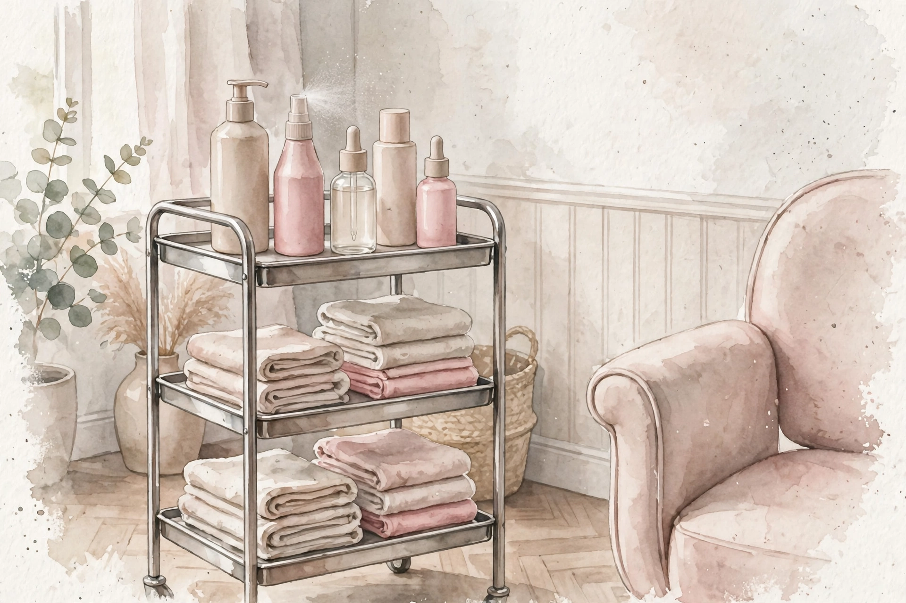
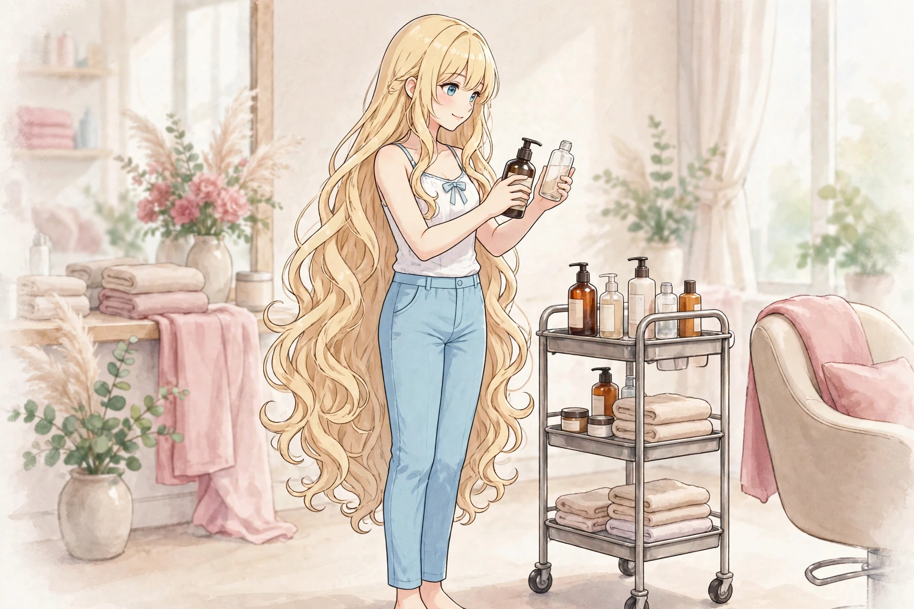

サロン専売品と市販品の表示の違い

シャンプーやトリートメントには、美容室で販売される「サロン専売品」と、ドラッグストアや通販で買える「市販品」があります。表示のどこが違い、どこが同じなのか。この記事では、表示の読み方として整理します。
違いの出発点は、販売経路
専売品は、美容室を通して販売されることを前提にした商品です。そのため、使い方の詳しい説明は、美容師からの案内とセットになっていることが多く、パッケージの表示は比較的簡潔なものもあります。市販品は、店頭で自分で選ぶ前提のため、販売ページやパッケージに、選び方の情報が多く書かれている傾向があります。
どちらが優れているという話ではなく、「説明を誰から受けるか」の違いです。自分の買い物の仕方に合う方を選ぶのが基本です。
容量と価格の表示の見方
専売品には、サロンで使う業務用の大容量サイズと、自宅用のサイズが分かれていることがあります。市販品は、詰め替え用を含め、容量の展開が店頭で比べやすい形になっています。比べるときは、これまでの記事と同じく、内容量で割って単価に直す方法が有効です。
成分表示については、専売品も市販品も、化粧品としての表示ルールは共通です。全成分表示の読み方（多い順に並ぶ、など）は、どちらの商品にも同じように使えます。販売経路が違っても、表示を読む力は共通の道具です。
選ぶときの観点は、相談と続けやすさ
専売品の利点は、自分の髪を見ている美容師に相談しながら選べることです。市販品の利点は、買い替えの手軽さと、価格を比べて選びやすいことです。どちらを選ぶ場合も、1回の使用量と持つ期間を計算して、続けられる価格帯かどうかを確認しておくと、途中で途切れにくくなります。
経路の違い、表示の共通点、相談のしやすさ。この3点で整理すると、専売品と市販品の位置づけが見えてきます。
通販で「サロン専売品」と書かれた商品を見かけることもあります。販売経路の前提が異なる商品が通販に出ている場合、使い方の相談先がない点には注意が必要です。専売品の価値は、商品そのものに加えて、美容師の案内とセットであることにあります。そのため、専売品を選ぶ場合は、通っている美容室で相談して購入する形が、本来の仕組みに沿っています。市販品についても、メーカーの公式の販売経路で買う方が、表示や条件の確認がしやすく、問い合わせ先も明確です。買い物の経路そのものも、表示を読む力と同じくらい大切な判断材料です。
なお、美容室を変えたときは、それまで使っていた専売品の名前と容量を伝えておくと、新しい担当者との相談がスムーズです。商品の情報は、経路を問わず、自分の髪の記録として役立ちます。

セラフィナ「違いは販売経路と説明の受け方。成分表示の読み方はどちらも共通だね」